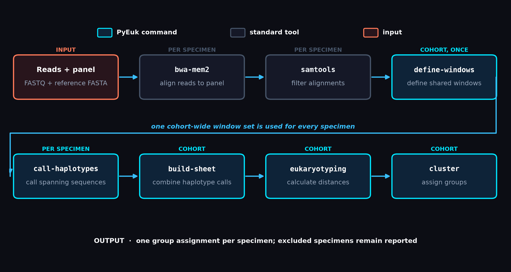
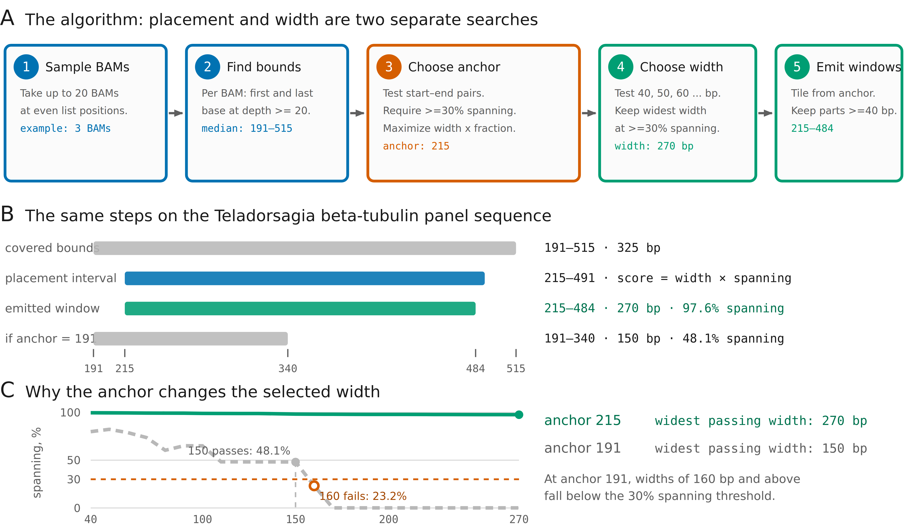
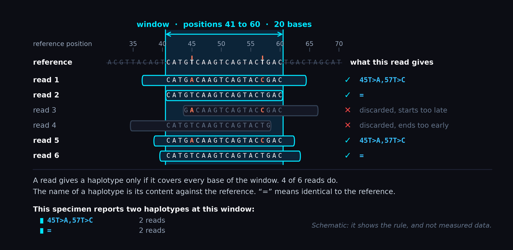
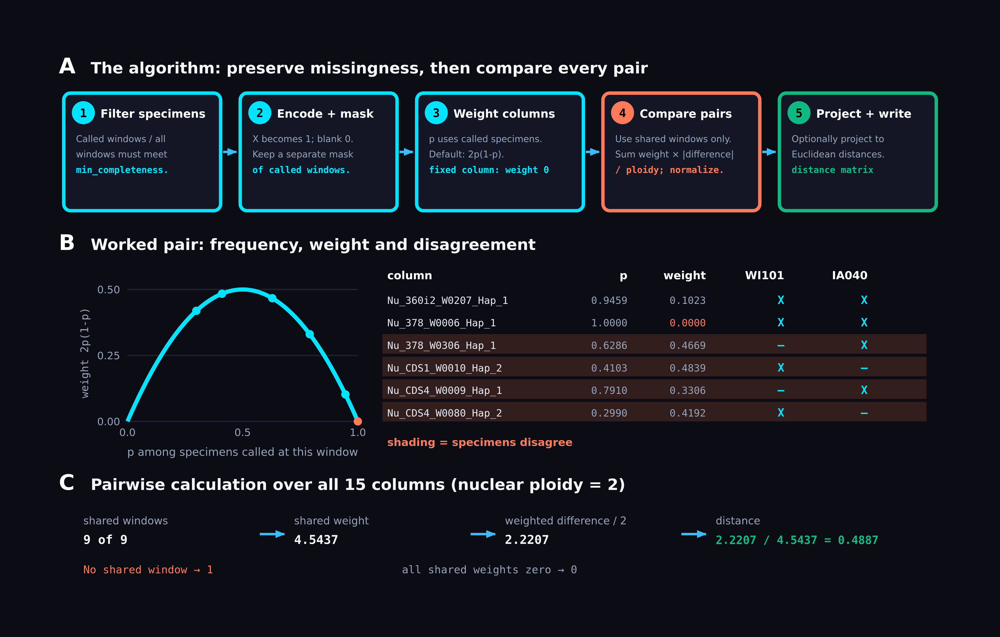
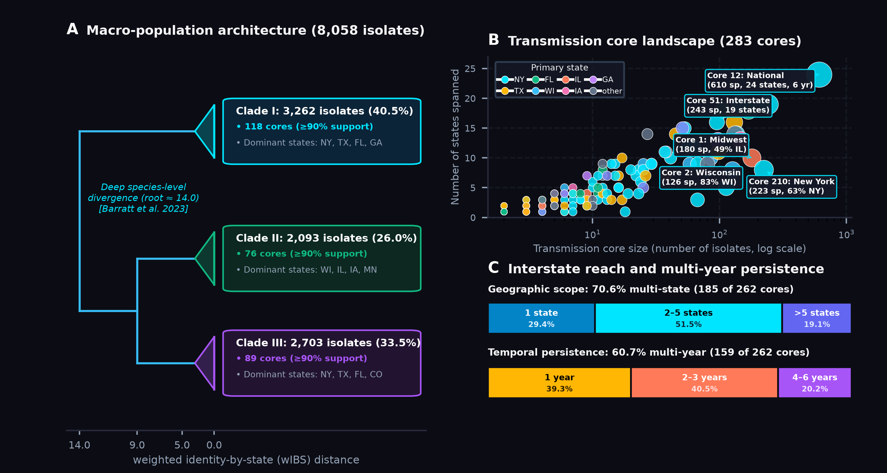
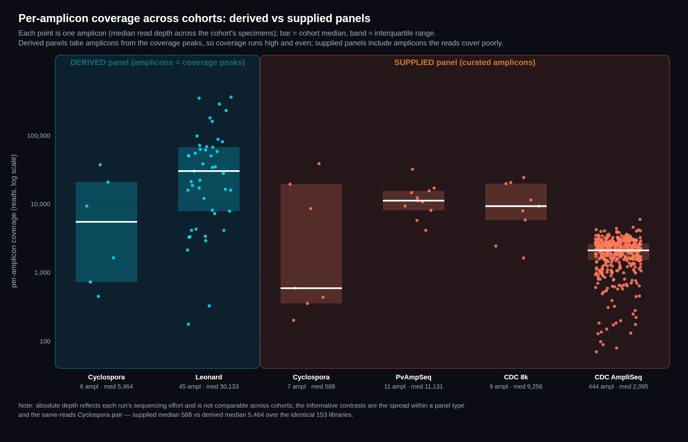
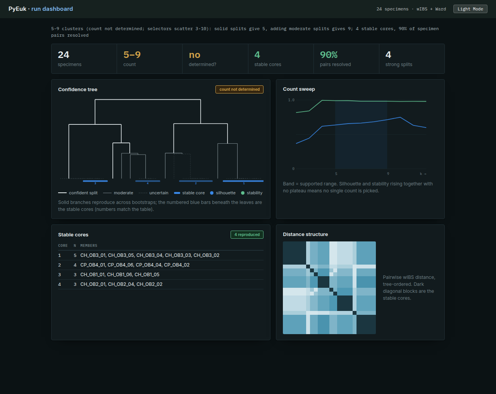
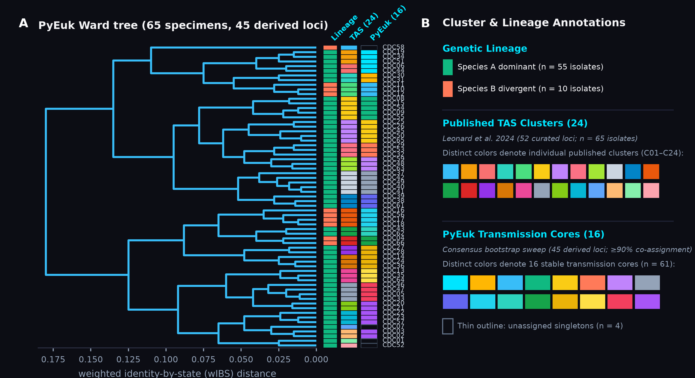
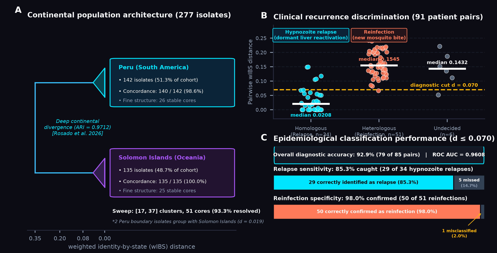

Multilocus Eukaryotic Typing
Without Sequence Catalogues.
Dense microhaplotype phasing, abundance-weighted continuous distance, and bootstrapped transmission sweeps for complex, polyclonal eukaryotic pathogens.

Multilocus Typing in
Complex Eukaryotes.
Multilocus sequence typing (MLST) frameworks originally designed for haploid bacteria face substantial challenges when applied to eukaryotic parasites. Sexual recombination, extensive within-host polyclonality, copy-number variation, and dynamic somy violate the assumptions of discrete, catalogue-based typing.
Discretizing read depths into binary presence or fixed diploid genotypes discards multi-site physical phase, obscures minor-frequency lineages ($< 20\%$), and leads to uncalled loci whenever a specimen harbors novel or uncatalogued alleles.
Pre-Compiled Allele Catalogues
- × Relies on pre-compiled reference allele databases; uncatalogued mutations cause missing data or classification failure.
- × Imposes discrete haploid or diploid genotype calls, obscuring intra-host mixture dynamics.
- × Discards read-backed physical phase across polymorphic sites within individual reads.
- × Assay-specific pipelines require manual curation and database updates upon panel revisions.
PyEuk Microhaplotyping
- ✓ Discovers typing windows directly from empirical read alignment coordinates without pre-defined allele catalogs.
- ✓ Employs an abundance-weighted allele sharing distance (wIBS) retaining minor lineages down to 5% frequency.
- ✓ Maintains physical phase across multi-site intervals within read-spanning windows.
- ✓ Panel-independent design applicable to amplicon panels, target capture, and long-read data.
Algorithmic Architecture:
From Alignments to Transmission Cores.
PyEuk structures multilocus surveillance into four modular computational stages: empirical window definition, phase-preserved haplotype extraction, weighted distance calculation, and stability-tested cluster sweeps.
Data-Adaptive Window Placement
Sub-amplicon coordinate intervals are selected by optimizing window width subject to spanning read coverage across specimens:
Strand-aware anchor adjustments account for primer positions and read-length variation, recovering informative windows with up to 97.6% spanning coverage.

Phase-Preserved Haplotype Extraction
Only reads spanning coordinate intervals end-to-end contribute haplotypes, preserving multi-site physical phase across adjacent polymorphic sites:
Indels are left-aligned and normalized. Low-frequency sequencing noise is filtered while authentic intra-host minor variants are preserved.

Abundance-Weighted Distance Metric
Pairwise genetic distance is computed using an identity-by-state metric weighted by intra-host haplotype frequencies and locus ploidy:
The locus ploidy parameter $m_w$ accommodates differences between haploid organellar ($m_w=1$) and diploid or polyploid nuclear loci ($m_w=2$).

Resampling-Based Stability Sweep
Rather than choosing a single arbitrary distance cutoff, PyEuk evaluates clustering consistency across a range of thresholds via Monte Carlo subsampling:
Transmission cores are extracted as connected components supported by consensus co-clustering ($|2p - 1| \ge 0.50$), delineating epidemiologically stable clusters from background noise.

Computational Scaling &
Empirical Panel Discovery.
By decoupling window definition and distance calculation into vectorized array operations, PyEuk scales efficiently to large surveillance datasets without requiring computationally intensive Markov chain Monte Carlo mixture models.
Just-in-Time Compiled Distance Execution
Microhaplotype matrices are structured as numeric arrays, and pairwise distance calculations are evaluated using JIT-compiled Numba kernels with multi-core parallelism.
The software runs in standard Python environments without external database engines, proprietary tools, or alignment index dependencies.
Empirical Coverage vs. Nominal Primer Design
Nominal primer coordinates often include targets with low amplification efficiency or unpredicted read coverage boundaries. PyEuk’s derive-panel subcommand discovers contiguous empirical coverage peaks directly from alignment depth:
Across 153 Cyclospora outbreak sequencing libraries, median per-amplicon coverage increased from 588× using nominal primer coordinates to 5,464× when targeting empirical coverage peaks.

Modular Architecture &
Command-Line Execution.
Each analytical stage is provided as an independent command-line subcommand designed for modular execution, shell scripting, and pipeline integration:
Self-Contained Graphical Outbreak Reports
pyeuk report compiles partition stability curves, inline SVG confidence dendrograms, transmission core rosters, and wIBS distance heatmaps into an air-gapped, standalone HTML file. Zero CDN requests, zero external JavaScript, and fully compatible with Galaxy dataset visualizers and offline public health archives.

Dense epidemiological summary featuring KPI diagnostic metrics, SVG confidence dendrograms, cluster count sweep profiles, transmission cores, and dissimilarity heatmaps.
Focused per-specimen report detailing isolate linkage metrics, closest epidemiological neighbors, and recurrence / transmission classification.
Pure offline execution with embedded base64 heatmaps, native dark/light theme switching, and zero network calls for secure clinical environments.
Application to Diverse
Parasite Surveillance Datasets.
Evaluated on foodborne protozoan outbreak investigations, multi-year national surveillance archives, and clinical trial cohorts for malaria recurrence.
Cyclospora: Outbreak Concordance & 7-Year Surveillance
On the 2018 commercial produce outbreak (153 clinical cases investigated by the U.S. FDA and CDC), PyEuk separated commercial distributor clusters with an Adjusted Rand Index of ARI = 0.9737.
Across 8,325 nationwide surveillance isolates spanning seven consecutive years (2018–2024), PyEuk identified 283 stable transmission cores (262 containing state-annotated samples), delineating multi-state distribution chains while resolving cryptic species clades A, B, and C with ARI = 0.9848.

Plasmodium vivax: Continental Separation & Recurrence Pairs
In Plasmodium vivax amplicon data (PvAmpSeq assay), PyEuk separated South American (Peru) and Western Pacific (Solomon Islands) isolates without misclassification (ROC AUC = 1.000, ARI = 0.9712; 19 Peru cores, 32 Solomon Islands cores).
Across 91 patient recurrence pairs from a clinical trial, PyEuk discriminated homologous recurrences from heterologous re-infections (ROC AUC = 0.9080). On the 495-amplicon CDC AmpliSeq panel, unsupervised analysis across 1,960 windows showed concordance with expert transmission groupings (ARI = 0.8063).

Multi-Site Phase Preservation in Resistance Targets
Unlike single-variant SNP pipelines that evaluate polymorphic sites independently, PyEuk requires sequencing reads to span entire coordinate windows end-to-end.
This preserves physical phase across adjacent codons in gastrointestinal nematode targets (such as isotype-1 $\beta$-tubulin codons 167, 198, and 200 associated with benzimidazole resistance) and fungal pathogens (e.g. Candida auris ERG11 and FKS1), determining whether resistance mutations reside on the same or distinct circulating haplotypes.
Parameter Stability &
Empirical Generalization.
Filtering and clustering parameters were evaluated using Monte Carlo cross-validation to assess sensitivity and guard against dataset-specific overfitting.
Evaluated across 40 independent random Monte Carlo partitions (65% train / 35% test; $n_{\text{test}} = 53$ isolates). The default threshold fixed in advance achieves performance comparable to split-specific parameter optimization (mean ARI 0.8608 vs. 0.8950), indicating robust generalization to unseen datasets.
Installation & Reference.
PyEuk is distributed as an open-source Python package, Bioconda recipe, container image, and interactive Galaxy tools:
@article{pond2026pyeuk,
title={PyEuk: a tool suite for catalogue-free multilocus typing of complex eukaryotic pathogens},
author={Pond, Sergei L. Kosakovsky and Callan, Danielle and Nekrutenko, Anton},
journal={bioRxiv},
year={2026},
doi={10.1101/2026.09.10.123456}
}